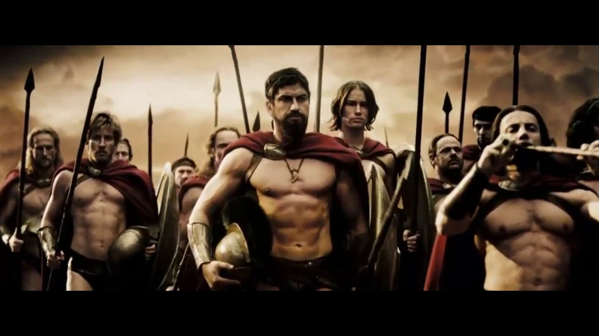

Os melhores filmes da década de 2000
Ação
- Apocalypto

- Velozes e Furiosos

- 300

- V de Vingança

Comédia
- Com a Bola Toda

- O Virgem de 40 Anos

- Kung-Fu Futebol Clube

Drama
- Sempre ao seu lado

- Um sonha possível

- Os Dois Filhos de Francisco

confira outars listas: